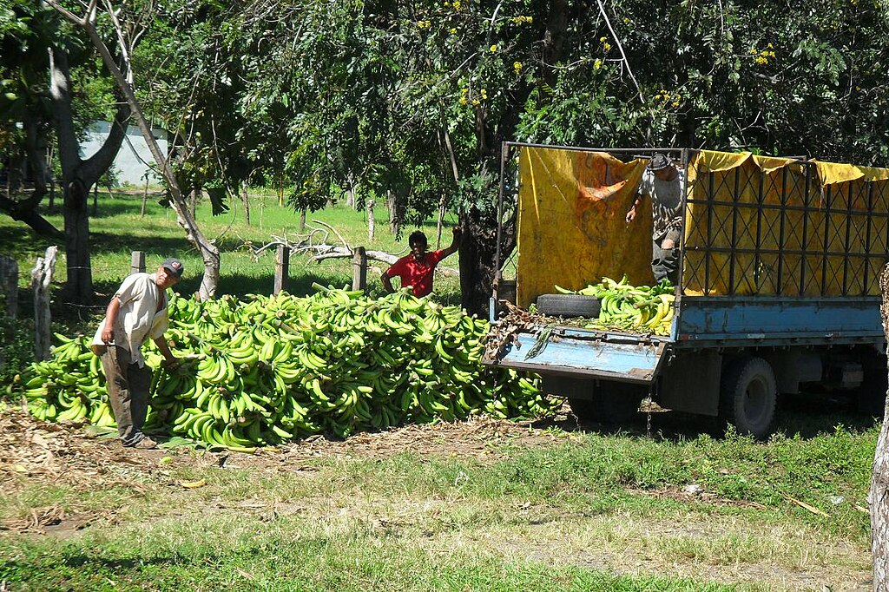

Bananas are the favorite berry of many around the world, but they have a long journey before arriving in your kitchen, no matter if you're planning to have it with cereal, a fruit bowl, banana bread, or whatever else.
 Milei.vencel, CC BY-SA 3.0, via Wikimedia CommonsOur story begins on a plantation in Honduras...